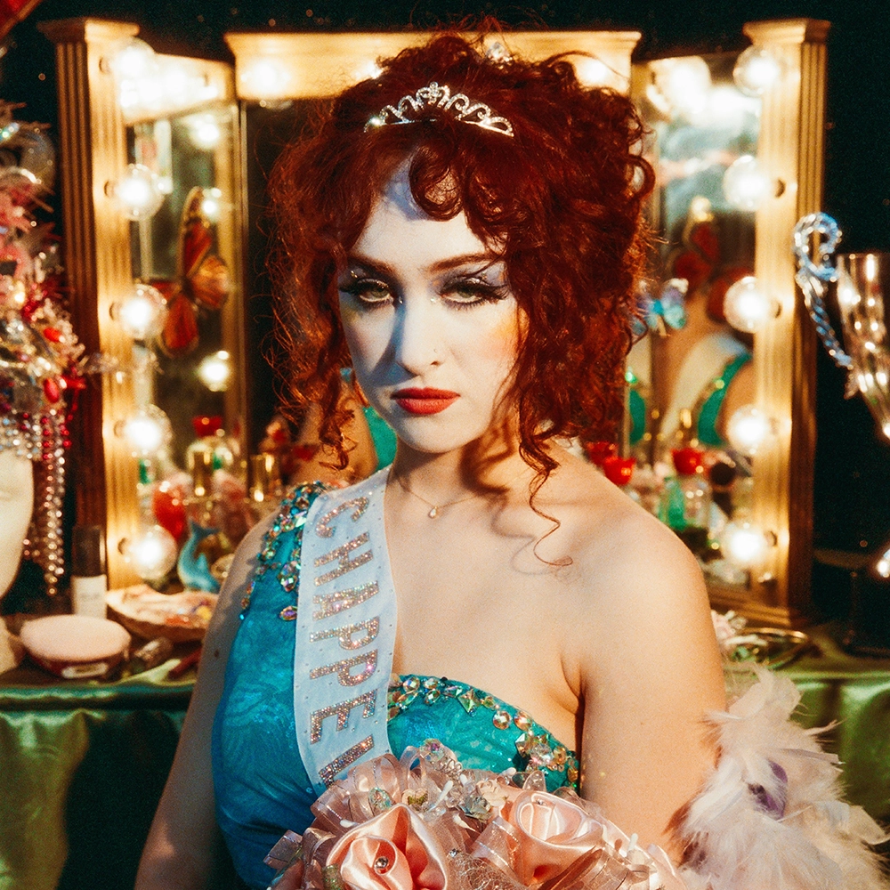
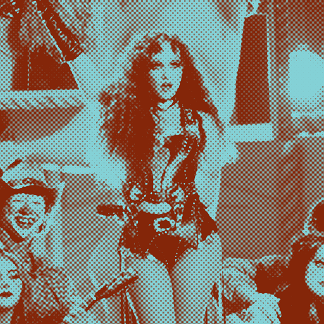
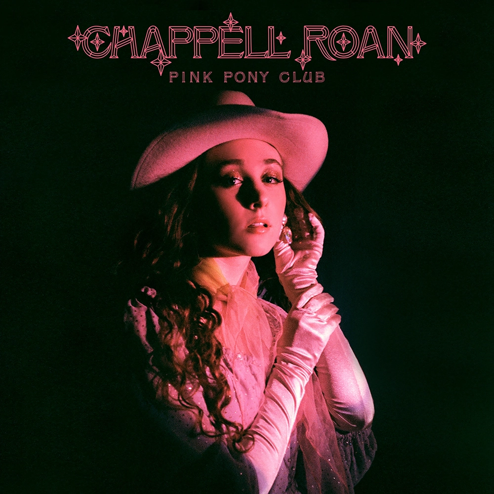
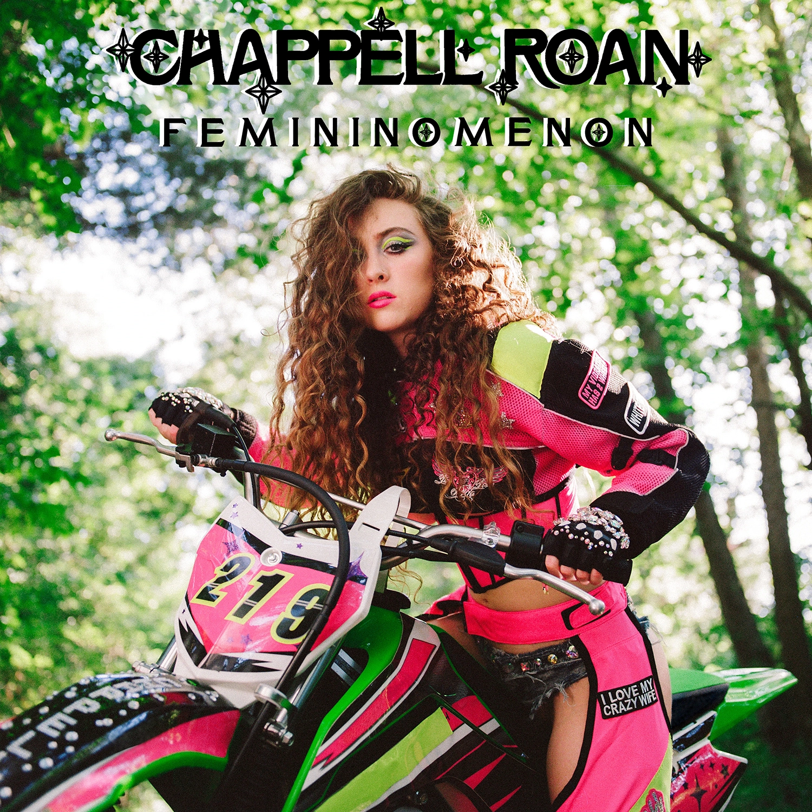
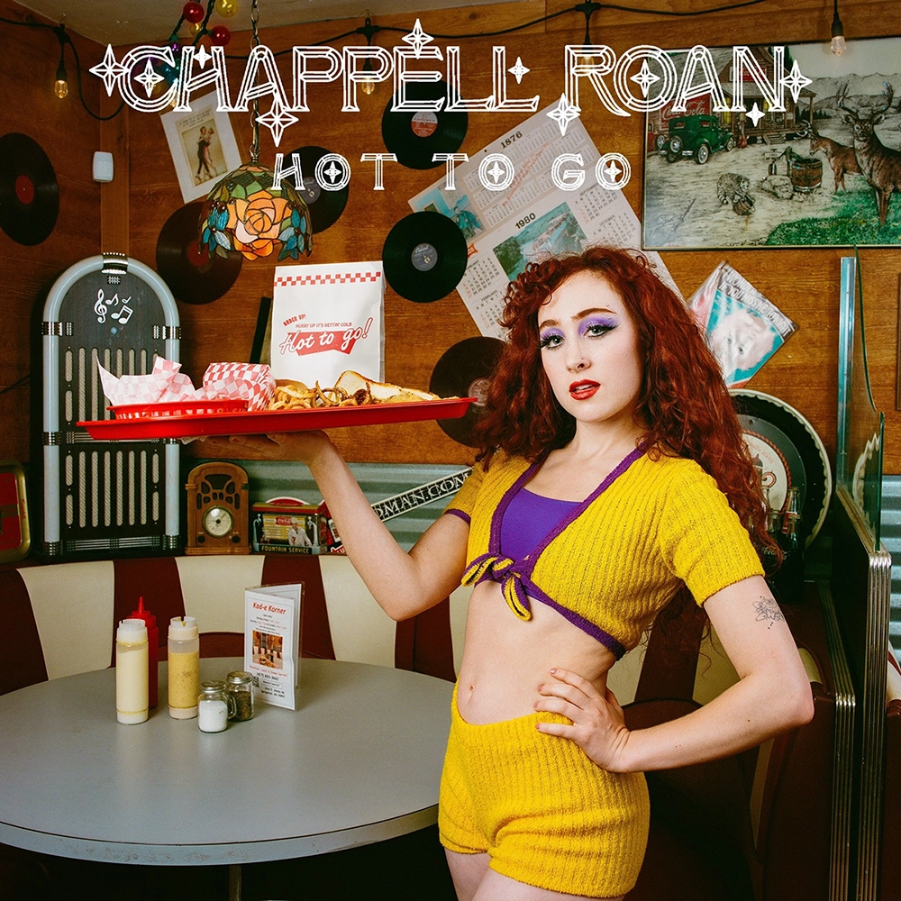
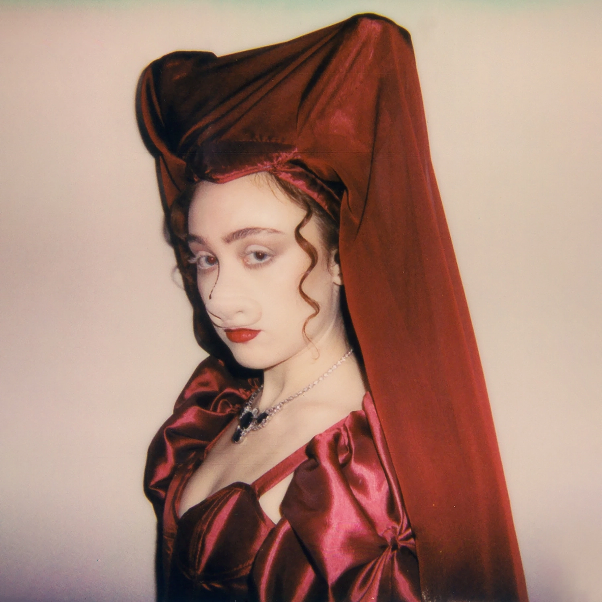
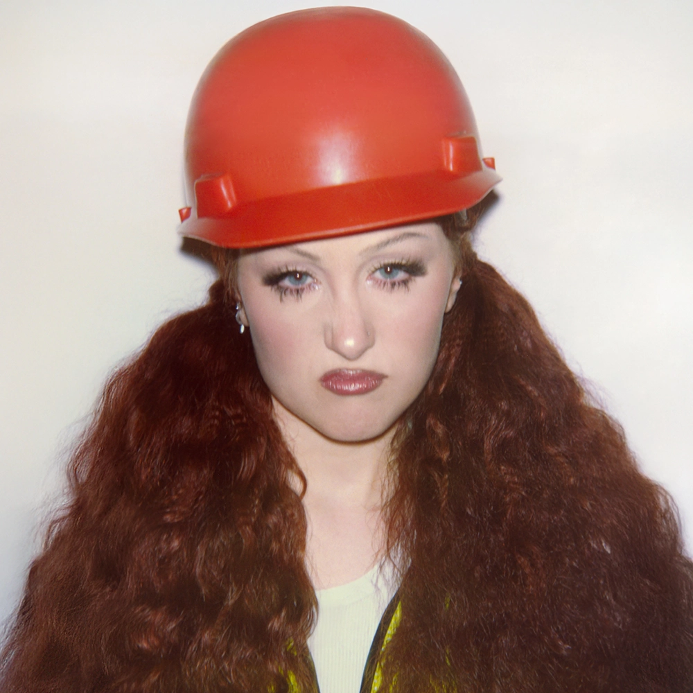
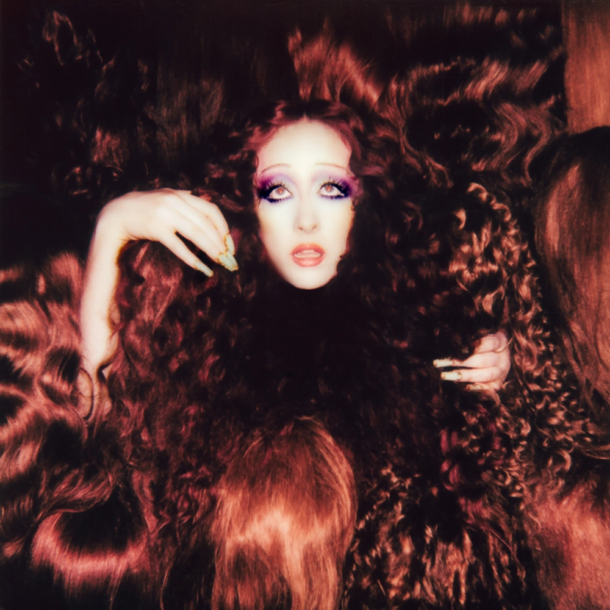

Studio Album
The Rise and Fall of a Midwest Princess, 2023

Chappell Roan, also known as Kayleigh Rose Amstutz, was born on February 19, 1998, in Willard, Missouri. She adopted the stage name Chappell Roan in honor of her grandfather, Dennis K. Chappell, who died of brain cancer in 2016. Roan began playing piano when she was 10 or 11 years old and performed publicly for the first time at the age of thirteen at her school's talent show, which she won. She began uploading cover songs to YouTube when she was fourteen, drawing attention from several record labels. Alongside her online presence, she performed around her hometown and in Springfield from 2012 to 2015.
Roan released her first single, "Good Hurt", in August. A month later, she released her debut extended play (EP), School Nights.
Roan began working with songwriter and producer Dan Nigro and released "Pink Pony Club", which recieved many positive responses.
In February, Roan embarked on the Naked in North America Tour, where each tour stop had a theme.
The Rise and Fall of a Midwest Princess was named Best Albums of 2023. She began her second headlining tour, the Midwest Princess Tour.
"Good Luck, Babe!" reached a peak of number four on Billboard Hot 100. The Rise and Fall of a Midwest Princess reached number two on Billboard 200.
Roan won Best New Artist at the 2024 MTV Video Music Awards and named the winner of the Sound of 2025 poll of musicians and music experts.

Roan won her first Grammy Award for Best New Artist. The Rise and Fall of a Midwest Princess was nominated for Album of the Year and Best Pop Vocal Album, and "Good Luck, Babe!" was nominated for Record of the Year, Song of the Year, and Best Pop Solo Performance.
Roan embarked Visions of Damsels & Other Dangerous Things Tour. "The Subway" was nominated at the Grammy Awards for Record of the Year and Best Pop Solo Performance.

The Rise and Fall of a Midwest Princess, 2023

Pink Pony Club, 2020

Femininomenon, 2022

Hot to go!, 2023

Good Luck Babe, 2024

The Giver, 2025

The Subway, 2025